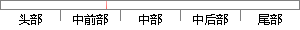

再进行多模态合并，归一化处理；
片段位置图

相似结果|
相似片段 1：)wCombMNZ—STO，原始得分经过wCombMNZ合并后，再进行STO归一化处 表3不同系统合并方法的ATwV得分理；(6)STO—wCombMNz—sTO，STo归一化处理后的得分经WCombMNZ合并后
相似片段 2：模态振型71（b） 利用包络点拟合二阶模态振型（c） 利用包络点拟合一阶模态振型图 4-21 利用包络点拟合的各阶模态振型提取对应的振型函数，并进行归一化处理，梁式结构的各阶模态振型如图 4-22 所示
相似片段 3：2，4，6，8 相邻程度的中间值2．3求权重并做一致性检验第一步对各层次 进行归一化处理，对于中间层一 层的判 断矩阵A进行归一化 处理然后得 到了 ，再进 行归一化 处理，得到特征向量∞1，然后根据A
相似片段 4：的信息，所以需要对大量的模态进行处理分析，并将变化差带入合适的分析模型。据此，相关学者深入研究，提出了基于柔度矩阵变化的柔度差法，将质量矩阵进行归一化处理，得到刚度矩阵和柔度矩阵的表达式。即将模态振型
相似片段 5：影像结构化数据归一化、提取。将归并的新字段进行归一化处理，然后与性别字段进行合并，提取出新的影像结构化数据。归一化公式如下：X=(x一如。)／(‰一瓦。) (5—1)结构化数据合并。以Pid为单位将
相似片段 6：维修性的B4～B6的各评估指标相对重要性的判 断矩 阵C，进行 归一 化处 理然 后得到 了c ，再 进行归一化处理 ，得到 co3，然后根据A = ∞得到最大特征向量值 3。 对于方案层，方案层相对于
相似片段 7：数据进行归一化处理。不失一般性，设样本数据为xp(p=l，2，?，斗)，定义x一=max{x，}，‰=mink，}，按下式进行归一化处理可将样本数据转换为0～1区间的数据136】∥：二L—塑生
相似片段 8：(3)选取代表振动信号主要特征的k个分量并进行归一化处理，构成特征向量P=[暑，￡，只，?e] (3—55)根据上述方法，对现场采集的信号进行特征提取，信号的类型为：尾梁振动信号如图3-2所示，矸石
相似片段 9：处理对B型指标信息爛进行归一化处理式(6)中，鶴、&2、為分别为对信息爛、峭度以及相关系数指标进行归一化处理后所得数值。2)获取指标权重向量。以信息爛指标为例，其爛值为H产-盒伞1% (7)式⑺中，5
相似片段 10：)；engine__labels(71：72)；enginelabels(80：81)]；．训练集选定以后，再进行数据预处理，在这里预处理的方法是对数据进行归一化，归一化就是要把你需要处理的数据经过处理后(通过某种算法)限制在你
|
※ 片段修改建议 ※
近似词参考：- 进行：举行
- 合并：归并
- 处理：处置 处置惩罚
系统自动生成语句：再举行多模态归并，归一化处置；
注：本片段修改建议为系统自动生成，仅供参考。